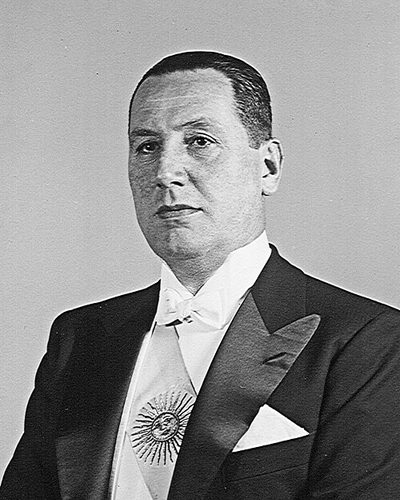

Ideologies / Third Position
What is Peronism (Justicialism)?
Peronism (Justicialism) is a political ideology in the Third Position family. The origin of the phrase Third Position: a path between capitalist individualism and communist collectivism, declared by Perón in the 1940s. It aims at an organised community in which the state balances capital and labour, unions are a pillar of the nation, and capital serves the economy and the economy serves social wellbeing. It is national and popular in character, and it seeks its mandate through mass elections.
Social justice, economic independence, political sovereignty.
Defined from: Juan Domingo Perón, The Organised Community and the Twenty Truths (1949 and 1950)
See how close you are to Peronism (Justicialism) Dare a friend to answer as one

.jpg){kind=link}
Where Peronism (Justicialism) stands on 13 axes
Each axis runs from 0 to 100. A score of 50 is the middle. On a classic compass it sits in the Authoritarian Left quadrant.
| Axis | Position | Score | In words |
|---|---|---|---|
| EconomyMarket to Planned | 65 | Leans Planned | |
| OwnershipPrivate to Collective | 45 | Balanced | |
| RightsLiberty to Security | 65 | Leans Security | |
| GovernmentDemocracy to Autocracy | 60 | Leans Autocracy | |
| StructureDecentralised to Centralised | 75 | Strongly Centralised | |
| NationInternationalist to Nationalist | 85 | Very strongly Nationalist | |
| ImmigrationMulticulturalist to Assimilationist | 65 | Leans Assimilationist | |
| ValuesProgressive to Traditional | 65 | Leans Traditional | |
| TechnologyAccelerationist to Precautionary | 40 | Leans Accelerationist | |
| EnvironmentIndustrialist to Environmentalist | 30 | Strongly Industrialist | |
| ReligionSecular to Religious | 65 | Leans Religious | |
| MilitaryPacifist to Militarist | 55 | Balanced | |
| TradeFree Trade to Protectionist | 85 | Very strongly Protectionist |
Ideologies closest to Peronism (Justicialism)
- Gaullism87% alike
- Romantic Nationalism86% alike
- Pancasila83% alike
- Rexism83% alike
- Garveyism82% alike
Its opposite on this map is Crypto Anarchism, at 31%.
Parties near Peronism (Justicialism)
Justicialist Party (Argentina) was the first party or movement to carry it, placed here from The Twenty Truths of Peronism (1950).
- Justicialist PartyArgentina. The Twenty Truths of Peronism (1950)94% alike
- United RussiaRussia. People's Programme (2021)85% alike
- GerindraIndonesia. Asta Cita (2023)85% alike
- National Liberation FrontAlgeria. Proclamation of 1 November 1954 (1954)85% alike
Common questions
What is Peronism (Justicialism)?
Peronism (Justicialism) is a political ideology in the Third Position family. The origin of the phrase Third Position: a path between capitalist individualism and communist collectivism, declared by Perón in the 1940s. It aims at an organised community in which the state balances capital and labour, unions are a pillar of the nation, and capital serves the economy and the economy serves social wellbeing. It is national and popular in character, and it seeks its mandate through mass elections.
What does Peronism (Justicialism) believe?
In one line: Social justice, economic independence, political sovereignty. Its strongest positions are Nationalist, Protectionist, Centralised. The origin of the phrase Third Position: a path between capitalist individualism and communist collectivism, declared by Perón in the 1940s. It aims at an organised community in which the state balances capital and labour, unions are a pillar of the nation, and capital serves the economy and the economy serves social wellbeing. It is national and popular in character, and it seeks its mandate through mass elections.
Who founded Peronism (Justicialism)?
Peronism (Justicialism) is defined here from The Organised Community and the Twenty Truths (1949 and 1950) by Juan Domingo Perón. The thinker most tied to it is Juan Perón (1895 to 1974).
Is Peronism (Justicialism) left wing or right wing?
On a classic two axis compass Peronism (Justicialism) falls in the Authoritarian Left quadrant, which means the economic centre and the authoritarian side. Left and right hide a lot, though, which is why EthosScales scores it on thirteen separate axes.
How is Peronism (Justicialism) different from Gaullism?
They are close: 87% alike. The biggest gaps are on Religion, where Peronism (Justicialism) scores 65 and Gaullism scores 45, and Economy, where Peronism (Justicialism) scores 65 and Gaullism scores 50. On each axis, 0 is one end and 100 is the other.
Think this is wrong? Suggest a correction. The scores are editorial estimates.